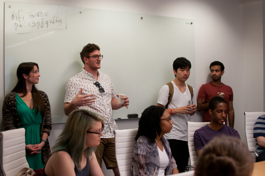
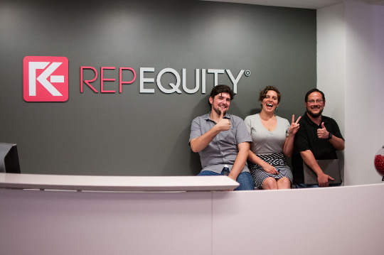

RepEquity HackDay: Console.log('Hello Friends')
May 9, 2015
Link to Published Version
Jessica Bell
⇓
On May 9th, the RepEquity Washington, DC offices hosted a Tech Day in collaboration with General Assembly DC and the JavaScript Guild. The event brought 30 – 40 people together for training sessions and collaborative work on personal projects.

Tech Day began with introductions, both from sponsor organizations and the diverse array of participants. Attendees ranged from HTML and CSS beginners to programmers and developers with over 10 years in the field. Many different languages and skills were represented including front end, back end, designers, data engineers, and full stack developers.
Training sessions were held throughout the day. RepEquity's Tech Director, Miro Scarfiotti, taught the group about how to develop in Drupal and what we can look forward to in Drupal 8. Jessica Bell, RepEquity's Associate Web Developer, ran an 'Intro to Git' session, orienting new developers to version control and project collaboration. Hammad Malik, JavaScript Guild Member and RepEquity's tech intern, introduced participants to JavaScript with fun problems such as FizzBuzz and Deck of Cards.
Tech Day brought in participants from all over the tech community: General Assembly alumni, RepEquity developers, JavaScript Guild participants, and DC Fem Tech members. After the training sessions, participants trotted out their personal projects for testing, feedback, collaboration, and general bragging! Projects included custom emoji sets, a site dedicated to helping film producers with lighting challenges, personal portfolios, and the ever-present 'website for a friend who found out I was a web developer' project.
The friendly atmosphere allowed for collaborations across skill sets and levels. A back end app dev could get design input and user experience suggestions, a tech noob could find a mentor to explain the difference between a fork and a branch, and everyone could dish about the experience of being in a constantly changing but fantastically challenging career journey!
